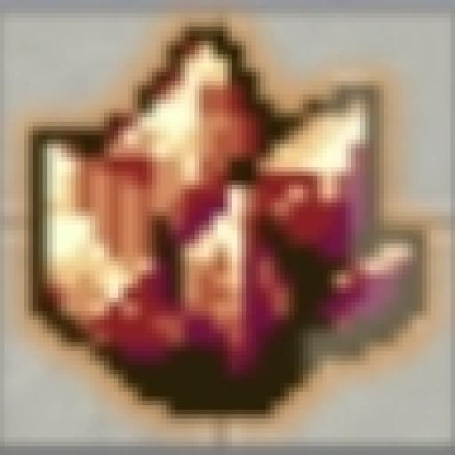
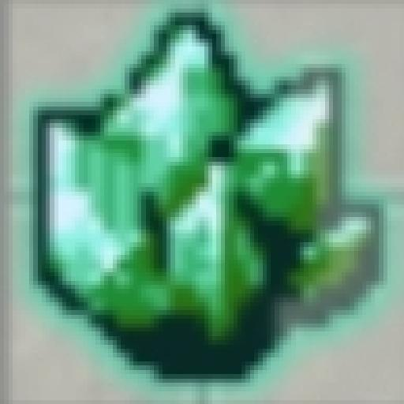
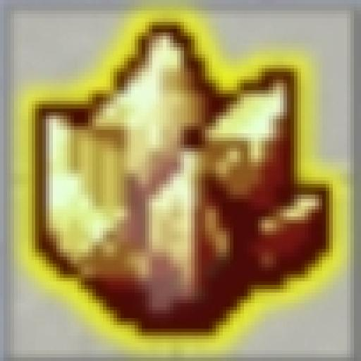

Guia de Power Crystals
Os Power Crystals são itens consumíveis que aumentam permanentemente os status de um Pokémon. Cada cristal melhora os status gerais em 1% e pode ser utilizado até 10 vezes em um mesmo Pokémon, totalizando um bônus de 10%.

Cristal de Sp. Ataque
Esse cristal aumenta 1% dos status base de sp. ataque do seu Pokémon.

Cristal de Sp. Defesa
Esse cristal aumenta 1% dos status base de sp. defesa do seu Pokémon.
Cristal de Boost
Esse cristal aumenta 1% dos status base de boost do seu Pokémon.

Cristal de crítico
Esse cristal aumenta 1% dos status base de crítico do seu Pokémon.
Como Obter os Power Crystals?
Os Power Crystals podem ser obtidos de diversas formas no jogo:
- [Dungeon hard]
- [Quest Cristais]
- [Metas do Donate Goal]
- [Eventos]